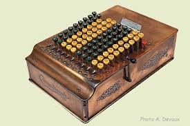

Informations sur le(s) créateur(s):
Charles Xavier Thomas de Colmar, né le 5 mai 1785 à Colmar et mort le 12 mars 1870 à Paris, chevalier d'Empire, fit progresser l’industrie des assurances par ses initiatives et fut également l'inventeur de la première machine à calculer industrielle : l’arithmomètre Thomas.
Informations sur la machine:
Thomas de Colmar simplifie l'arithmomètre en ôtant le curseur multiplicateur. Ce n'est plus qu'une machine à addition et soustraction directes mais grâce à son plateau de résultat mobile, et, bientôt, le compteur de tours de manivelle, elle permet de faire des multiplications, des divisions, des racines carrées, d'une manière simple et rapide. Chaque machine est dotée d'un numéro de série et des notices d'instructions sont imprimées.